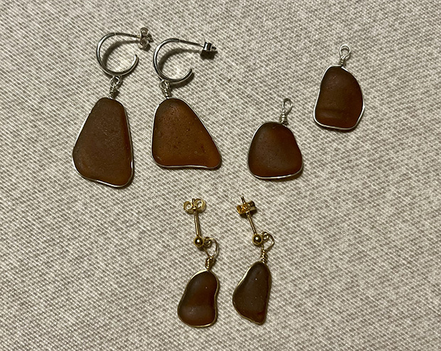

Natur glas
Natur glas er meget simpelt det havglas, som vi finder naturligt i naturen, især langs kyster og strande, hvor bølger, sand og saltvand har arbejdet på at gøre glasset glat og ældet. Modsat tumlet glas som er det man selv har lavet.
Dette glas kan være gamle flasker, vinduer eller andre genstande, som har fået deres karakteristiske

Fordele ved at finde havglas i naturen
At finde havglas i naturen er en unik og hyggelig oplevelse. Havglas har ofte en ældgammel oprindelse, fra glasset er havnet i havet og til det bliver fundet på en strand, er det blevet slebet af bølger og sandkorn hvilket giver hvert stykke glas en unik form.
En af de største fordele ved at finde havglas er, at det er et genbrugsmateriale, som naturen selv har bearbejdet. Det er også et symbol på, hvordan menneskeskabte materialer kan blive en del af naturens cyklus og finde en ny værdi efter at have været forladt.
Havglas i smykker
Når det kommer til at bruge havglas i smykkedesign, er det blevet populært både på grund af de mange smykke farver, men også på grund af charmen ved at samle det og at det er blevet formet af naturen.
Det glas, der er formet af naturens kræfter, bringer en unik æstetik til smykker som halskæder, øreringe og ringe. Hver stump havglas har sin egen historie, hvilket gør smykker lavet af havglas personlige og unikke.
Bæredygtighed
Derudover er havglas et bæredygtigt alternativ til nye materialer, hvilket appellerer til dem, der ønsker at støtte miljøvenlige og etiske produkter.